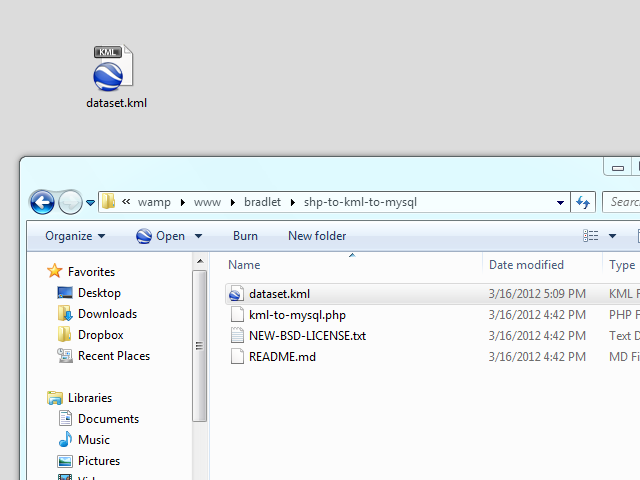
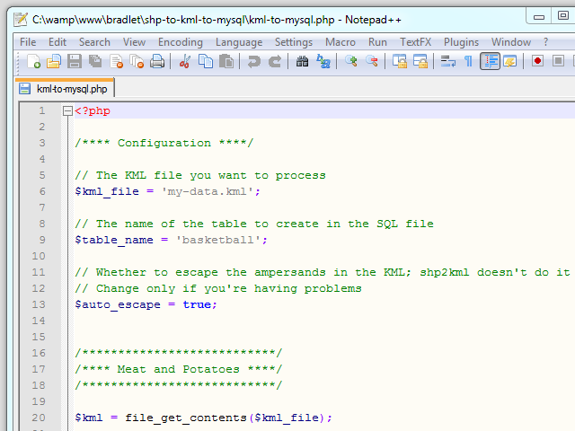
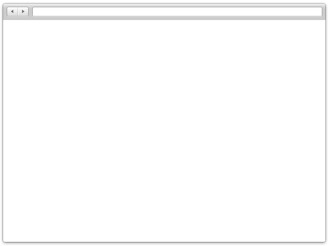
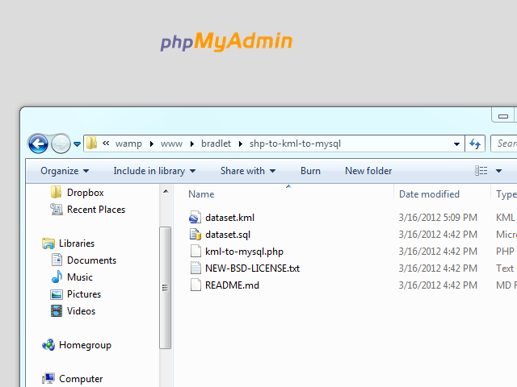

Select the SHP file for conversion and update the options.
Choose the SHP file.
Select the proper datum to match the SHP file.
Update the units to match the SHP file.
Select the correct field to represent the primary name of the place.
Choose the right field for the name.
Ignore the symbol selection step.
Just click Next.
Select the fields you want included in the KML dataset.
Select all fields or check off only the ones you want.
Save the extracted KML file to the same location as the SHP file.
Export the KML file.

Move the new KML file to the shp-to-kml-to-mysql folder in your wamp/www folder.
Move the KML file…
to the shp-to-kml-to-mysql folder.

Update the kml-to-mysql.php file with your details. The table name you set is what the table will be called when you import into MySQL.
Change the KML file path to match your file.
Change the name of the table for your dataset.

Execute the kml-to-mysql.php script to create the SQL file for importing into MySQL.localhost/bradlet/shp-to-kml-to-mysql/kml-to-mysql.php

Go to PHPMyAdmin and import the newly generated SQL. This will create a new table in your database with the name you specified above—and it will fill the table with your data. Your MySQL table and data will need some massaging afterwards.